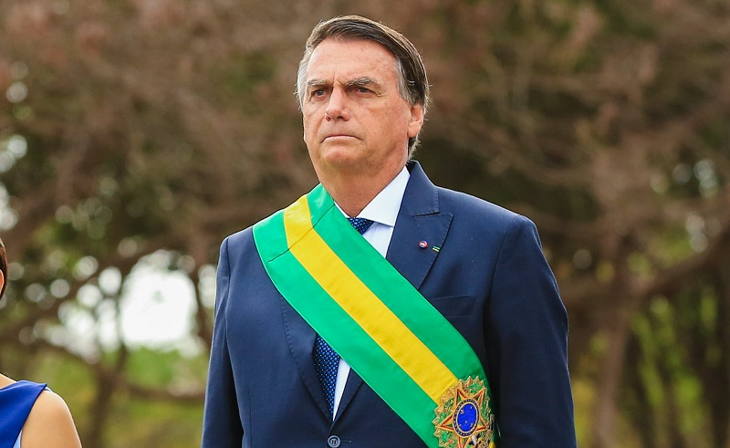
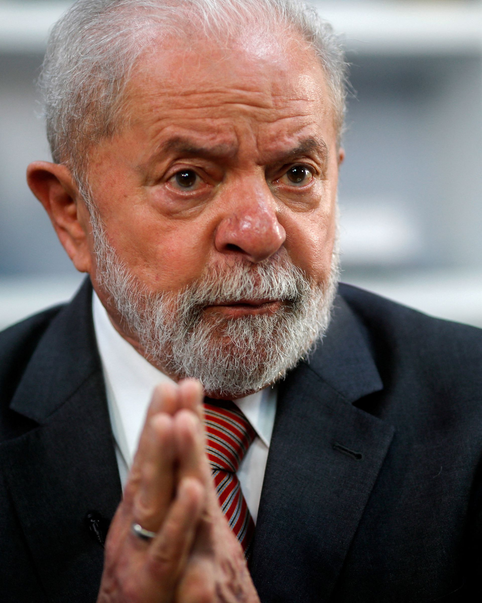
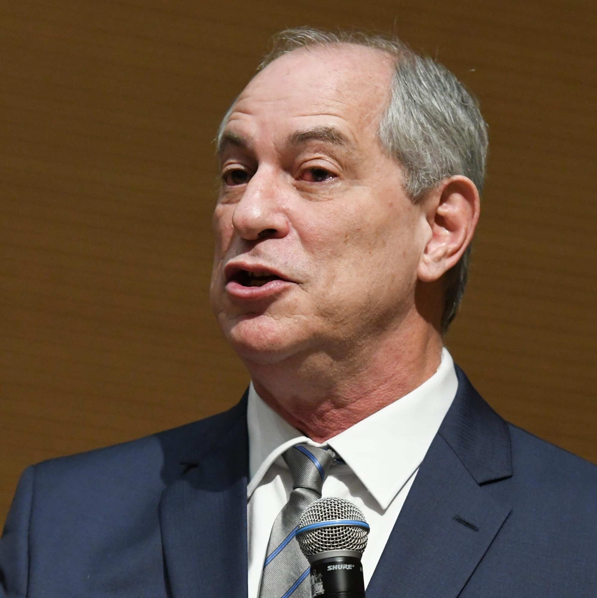

Bolsonaro
Lula
Ciro Gomes
Jair Messias Bolsonaro GOMM (Glicério, 21 de março de 1955) é um militar reformado e político brasileiro, filiado ao Partido Liberal (PL). É o 38.º presidente do Brasil desde 1.º de janeiro de 2019, tendo sido eleito pelo Partido Social Liberal (PSL). Foi deputado federal pelo Rio de Janeiro entre 1991 e 2018. Nasceu no município de Glicério, no interior do estado de São Paulo, mas morou em várias outras cidades paulistas ao longo de sua infância.


Luiz Inácio Lula da Silva GColL • GCTE • GCMM (nascido Luiz Inácio da Silva; Garanhuns, 27 de outubro de 1945), mais conhecido como Lula, é um ex-sindicalista, ex-metalúrgico e político brasileiro, filiado ao Partido dos Trabalhadores (PT). Foi o 35.º presidente do Brasil entre 1.º de janeiro de 2003 e 1.º de janeiro de 2011.

Ciro Ferreira Gomes GOMM (Pindamonhangaba, 6 de novembro de 1957) é um advogado, professor universitário e político brasileiro, filiado ao Partido Democrático Trabalhista (PDT), do qual é vice-presidente. Ocupou altos cargos políticos no país: foi deputado estadual por duas legislaturas no Ceará, o 43.º prefeito de Fortaleza, o 52.º governador do Ceará, ministro da Fazenda do Governo Itamar Franco durante a implantação do Plano Real e ministro da Integração Nacional durante o projeto de transposição do rio São Francisco no governo de Luiz Inácio Lula da Silva. Seu último mandato político foi o de deputado federal entre 2007 e 2011.